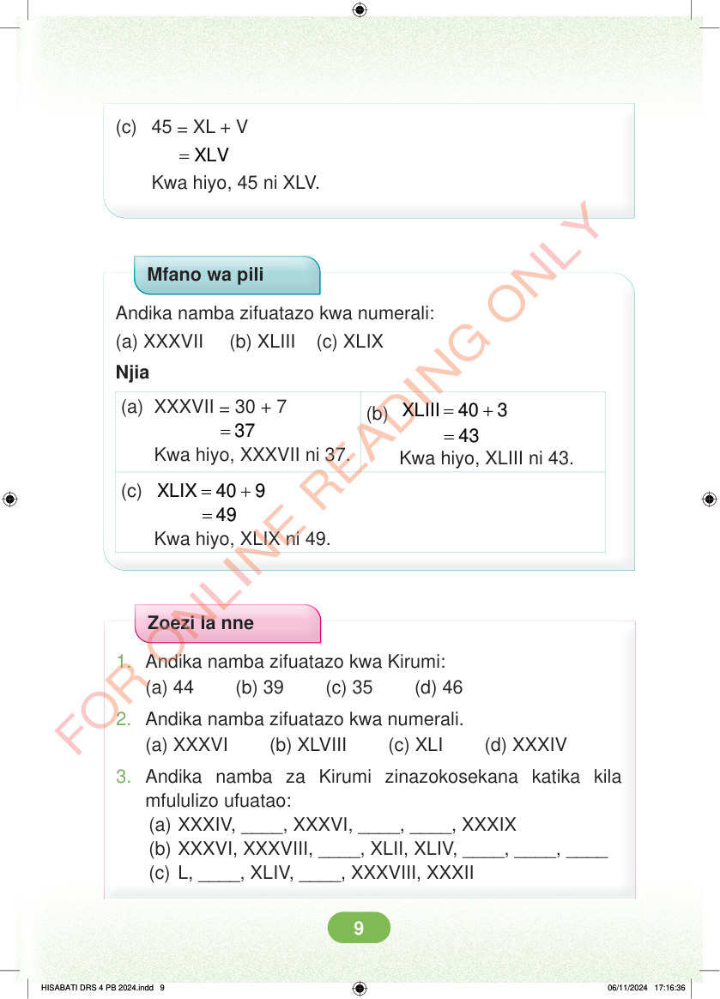

Kipengele c. 45 = XL + V. = XLV. Kwa hiyo, 45 ni XLV. Mfano wa pili. Andika namba zifuatazo kwa numerali. Kipengele a, XXXVII. Kipengele b, XLIII. Kipengele c, XLIX. Njia. Kipengele a. XXXVII = 30 + 7. = 37. Kwa hiyo, XXXVII ni 37. Kipengele b. XLIII = 40 + 3. = 43. Kwa hiyo, XLIII ni 43. Kipengele c. XLIX = 40 + 9. = 49. Kwa hiyo, XLIX ni 49. Zoezi la nne. Swali namba moja. Andika namba zifuatazo kwa Kirumi. Kipengele a, 44. Kipengele b, 39. Kipengele c, 35. Kipengele d, 46. Swali namba mbili. Andika namba zifuatazo kwa numerali. Kipengele a, XXXVI. Kipengele b, XLVIII. Kipengele c, XLI. Kipengele d, XXXIV. Swali namba tatu. Andika namba za Kirumi zinazokosekana katika kila mfululizo ufuatao. Kipengele a, XXXIV, ____, XXXVI, ____, ____, XXXIX. Kipengele b, XXXVI, XXXVIII, ____, XLII, XLIV, ____, ____, ____. Kipengele c, L, ____, XLIV, ____, XXXVIII, XXXII.